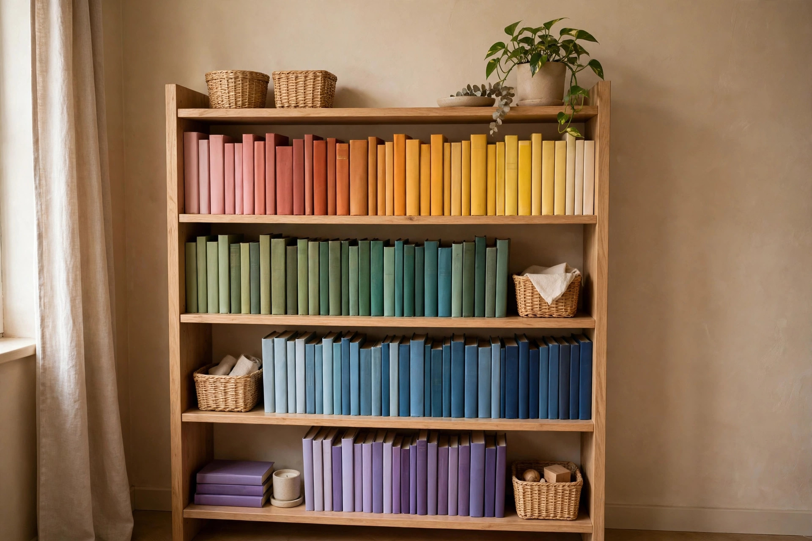

Small Space Storage & Organisation
Small Apartment Bookshelf Organisation Ideas on a Budget
Intro
A bookshelf in a small apartment is never just for books. It holds the books, the board games, the photo frames, the plant, the chargers and the things with nowhere else to go — and when it is full, the whole room looks messy. The fix is not a bigger shelf. It is deciding what the shelf is for, and giving everything else a different home.
This guide has 12 bookshelf organisation ideas on a budget — grouping, baskets, colour order and what to remove. Each idea lists what it costs, and most cost nothing at all. A tidy shelf takes about an hour, and it changes how the whole room feels.

1. Take everything off first — $0
Empty the shelf completely before you organise it. Wipe each shelf, then sort everything into three piles: keep on this shelf, move somewhere else, give away. Most shelves hold at least a third of things that belong elsewhere. The empty shelf shows you how much space you actually have — usually more than you thought.
2. Group books by use, not by size — $0
Group the books you read now together, the reference books together, and the books you are keeping for looks together. Put the books you use most at eye level, where they are easy to reach. Books you rarely open go on the top or bottom shelf. Grouping by use means you find the book you want without scanning the whole shelf.
3. Colour order for a calm look — $0
Arranging books by colour — all the reds together, then oranges, then blues — makes a full shelf look calm and deliberate instead of chaotic. It costs nothing and takes ten minutes. It works best on a shelf that is mostly books. If you cannot find a book by colour, keep a small group by author instead and colour-order the rest.
4. Baskets for the small stuff — $12–$18
Small things — chargers, remotes, craft supplies, the odds and ends — look messy on an open shelf. Three small baskets cost about $15 and hide them all. One basket per category, labelled if you like. Baskets also stop small things from falling behind the books. Choose baskets that fit the shelf depth, so they do not stick out.
5. Leave one shelf half-empty — $0
A shelf packed to the edge looks crowded, however tidy it is. Leave one shelf half-empty, or leave a gap at the end of each shelf for a plant or a photo frame. Empty space is part of the design — it lets the eye rest. If the shelf is too full, that is a sign to remove books, not to buy another shelf.
6. Stack some books horizontally — $0
Not every book has to stand upright. A short horizontal stack on one shelf makes a good base for a plant or a candle, and it breaks up long rows of spines. Stack three to five books, largest at the bottom. Horizontal stacks also fill a shelf that is too short for tall books.
7. One shelf for display, the rest for storage — $0
Give one shelf — usually the eye-level one — to display: a few favourite books, a photo, a plant, one decorative object. The other shelves are for storage, and they can be full and practical. One display shelf makes the whole bookcase look intentional, even when the other shelves are packed.
8. Magazine files for papers and notebooks — $8–$12
Upright magazine files hold notebooks, papers, children's drawings and thin books that flop over on their own. Four files cost about $10. Label each file — "bills", "school", "recipes" — and the shelf doubles as a filing system. Cardboard files are cheapest; plastic ones last longer.
9. A plant on the top shelf — $5–$10
A trailing plant on the top shelf softens the whole bookcase and draws the eye upward, which makes the room feel taller. A small trailing plant costs about $8. Choose one that likes low light if the shelf is away from the window, and water it when you dust the shelf — one routine for both jobs.
10. Remove one book for every new one — $0
The one-in, one-out rule keeps the shelf from filling up again. When a new book arrives, an old one leaves — to a friend, a charity shop or a little free library. In a small flat, this rule is the only thing that stops the shelf from overflowing within a year. Keep a small bag by the shelf for books on their way out.
11. Sort children's books by size and use — $0
Children's books are different shapes and sizes, so they defeat most systems. Sort them into two groups: the five favourites, kept at the child's eye level, and the rest, kept higher up and rotated every few weeks. Rotation makes old books feel new. A small basket holds the favourites and can be carried to the sofa.
12. Dust and straighten once a month — $0
A bookshelf stays organised only if it is maintained. Once a month, take five minutes: straighten the books, return anything that wandered there, dust the shelves and check the baskets. Five minutes a month beats a full reorganisation every six months. Put it on the same day as another monthly job, so you remember it.
Conclusion
A bookshelf is organised when every shelf has a job and every book has a reason to be there. Empty it, group by use, hide the small stuff in baskets, and leave some space empty on purpose. An hour of work and $15 of baskets can make the shelf — and the room around it — feel calm again.
Budget recap
- Three baskets + four magazine files: ~$25 - A trailing plant: ~$8 - Everything else: $0
Total for an organised bookshelf: ~$25 — or $0 with grouping and gaps alone.
Pinterest pin titles
- Small Apartment Bookshelf Organisation Ideas on a Budget
- 12 Bookshelf Organisation Ideas That Make a Tiny Room Feel Calm
- Messy Bookshelf? 12 Budget Fixes (Most Cost $0)